What is Arduino?
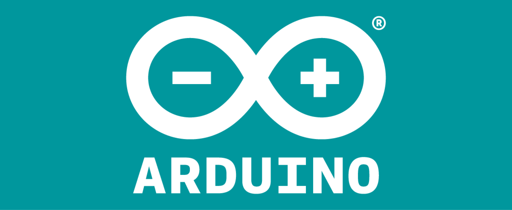
Arduino is a platform for creating electronics and programming
projects. It consists of a physical board that can be connected to
various components, such as sensors, LEDs, motors, etc., and a
software environment that can be used to write and upload code to
the board.
The Arduino board has a microcontroller, which is a small computer
that can run the code and interact with the components. The board also
has pins, which are the points where the components can be attached
using wires or a breadboard. The board can be powered by a USB cable
or a battery, and can communicate with a computer or other devices
using serial, Bluetooth, or Wi-Fi.
The Arduino software, also known as the Arduino IDE (Integrated
Development Environment), is a program that allows you to write code
in a simplified version of C++, and upload it to the board using a USB
cable. The IDE also has a serial monitor, which can be used to view
the data sent and received by the board, and a library manager, which
can be used to install additional libraries that provide more
functionality and support for different components.
Arduino is useful for makers and hobbyists because it is easy to use,
affordable, and versatile. You can use Arduino to create a variety of
projects, from simple blinking LEDs to complex robots, smart home
devices, musical instruments, and more. Arduino is also open-source,
which means that anyone can use, modify, and share its hardware and
software designs. This encourages creativity, collaboration, and
innovation among the Arduino community.
Open Source
One of the advantages of Arduino is that it is an open-source project.
This means that anyone can use, modify, and share its hardware and
software designs for free and without any restrictions. This
encourages creativity, collaboration, and innovation among the Arduino
community.
You can find the various open-source projects managed by the Arduino
team on their [GitHub page]. There, you can access the source code and
schematics of the Arduino boards, the Arduino IDE, the Arduino
libraries, and the Arduino tools. You can also contribute to these
projects by reporting issues, suggesting features, or submitting pull
requests. You can also fork these projects and create your own
versions of Arduino.
Hardware
The Arduino board is a compact and programmable circuit board that
integrates a microcontroller as its central component. The
microcontroller functions as a miniature computer capable of executing
specific tasks based on programmed instructions. Arduino boards are
available in diverse forms and dimensions, while consistently
featuring input/output pins that facilitate connectivity and control
of various electronic components, including but not limited to
sensors, motors, LEDs, and other peripherals. These input/output pins
serve as interfaces through which the Arduino board can interact with
external devices, enabling users to create interactive and
customizable electronic systems.
Arduino Uno
A microcontroller board based on the ATmega328P, with 14 digital I/O
pins, 6 analog inputs, a 16 MHz ceramic resonator, a USB connection, a
power jack, and an ICSP header. It is compatible with most Arduino
shields and can be powered by an external wall wart or a battery
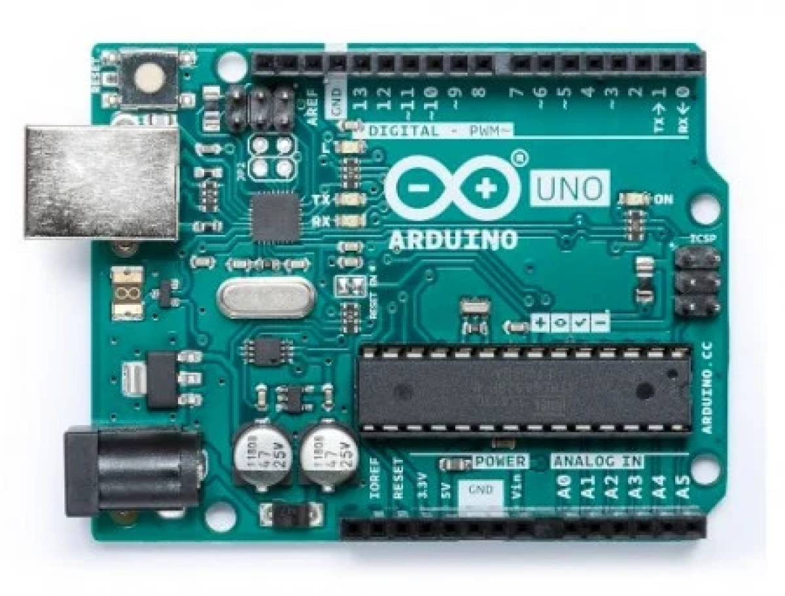
Our team will be using Arduino Uno for our class project and
assesment.
Arduino Uno is a microcontroller board based on the ATmega328P (
datasheet). It has 14 digital input/output pins (of which 6 can be used as
PWM outputs), 6 analog inputs, a 16 MHz ceramic resonator
(CSTCE16M0V53-R0), a USB connection, a power jack, an ICSP header
and a reset button. It contains everything needed to support the
microcontroller; simply connect it to a computer with a USB cable or
power it with a AC-to-DC adapter or battery to get started.. You can
tinker with your Uno without worrying too much about doing something
wrong, worst case scenario you can replace the chip for a few
dollars and start over again.
"Uno" means one in Italian and was chosen to mark the release of
Arduino Software (IDE) 1.0. The Uno board and version 1.0 of Arduino
Software (IDE) were the reference versions of Arduino, now evolved
to newer releases. The Uno board is the first in a series of USB
Arduino boards, and the reference model for the Arduino platform;
for an extensive list of current, past or outdated boards see the
Arduino index of boards..
Arduino Nano
A small, breadboard-friendly board based on the ATmega328, with 14
digital I/O pins, 6 analog inputs, a 16 MHz ceramic resonator, a mini
USB port, and an ICSP header. It has the same functionality as the
Arduino Uno, but in a smaller form factor.
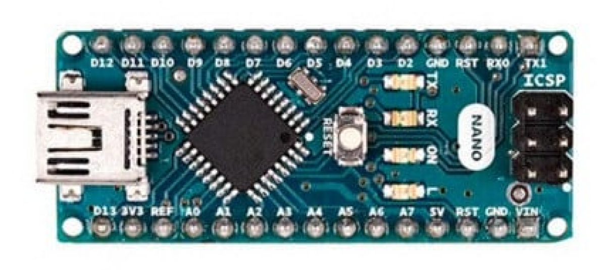
Arduino Mega
A microcontroller board based on the ATmega2560, with 54 digital I/O
pins, 16 analog inputs, 4 UARTs, a 16 MHz crystal oscillator, a USB
connection, a power jack, and an ICSP header. It has more memory and
I/O pins than the Arduino Uno, and can support more complex projects.
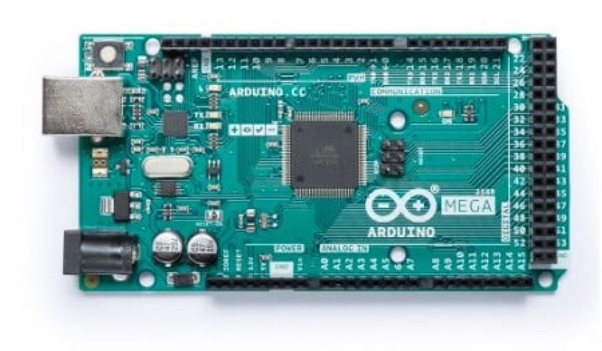
Arduino Due
A microcontroller board based on the SAM3X8E ARM Cortex-M3 CPU, with
54 digital I/O pins, 12 analog inputs, 4 UARTs, an 84 MHz clock, a USB
OTG capable connection, a power jack, and an SPI header. It is the
first Arduino board based on a 32-bit ARM core microcontroller, and
operates at 3.3V instead of 5V.
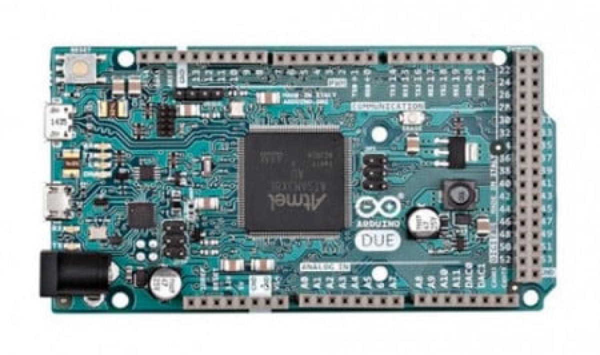
Simulators
Tinkercad Circuits
A free online simulator that runs in your web browser. You can drag
and drop components, wires, and code blocks to create your circuits
and programs. You can also view the simulation results, such as
voltage, current, and serial output, in real time. Tinkercad Circuits
supports many Arduino boards and components, and also integrates with
the Arduino Web Editor.
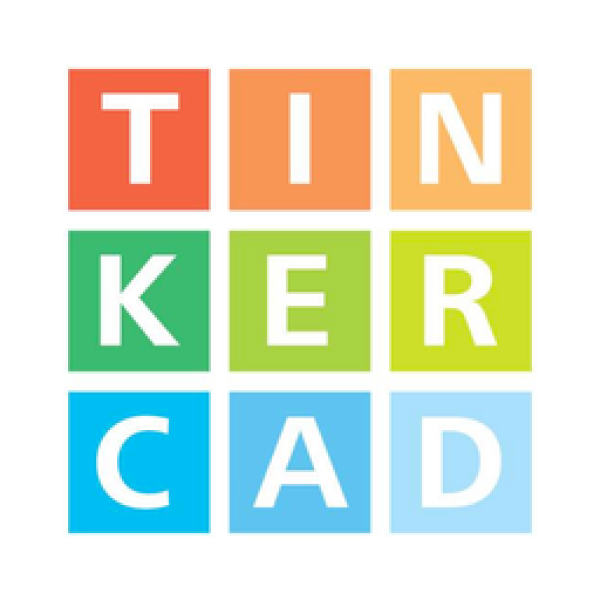
Wokwi
A free online simulator that runs in your web browser. You can write
code in C++, MicroPython, or Rust, and upload it to various Arduino
boards, such as Uno, Nano, Mega, and Due. You can also use many
components, such as LEDs, LCDs, speakers, motors, sensors, and more.
Wokwi also provides a serial monitor, a logic analyzer, and a debugger
CircuitLab
A paid online simulator that runs in your web browser. You can design
and simulate analog and digital circuits, including Arduino projects.
You can also use the built-in oscilloscope, multimeter, and waveform
generator to analyze your circuits. CircuitLab supports many Arduino
boards and components, and also allows you to export your schematics
and code
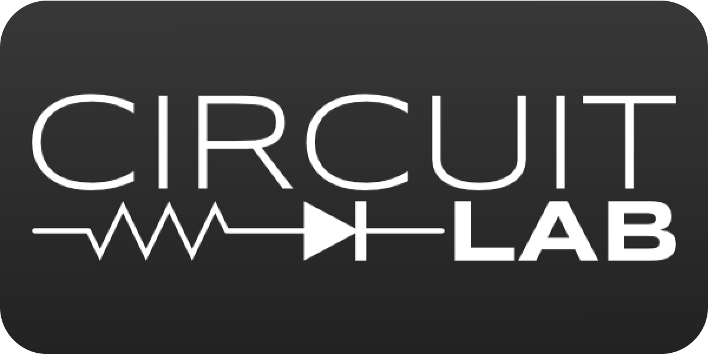
Software
Arduino IDE
Arduino IDE is a desktop application that you can download and install
on your computer. It supports Windows, Mac OS, and Linux operating
systems.
Arduino Web Editor
Arduino Web Editor is a web-based application that you can access from
your web browser. It supports Chrome, Firefox, Safari, and Edge
browsers.
Arduino CLI
Arduino CLI is a command-line interface that allows you to compile and
upload code to your board without using a graphical interface. It is
useful for advanced users who want more control and flexibility over
their development process.
Arduino Lint
Arduino Lint is a tool that checks your code for common errors and
best practices. It is useful for improving the quality and readability
of your code.
Arduino FWUploader
Arduino FWUUploader is a tool that updates the firmware of your board
or its connected components. It is useful for fixing bugs and adding
new features to your board.
Getting Started with Arduino IDE
You can download Arduino Software from here according to your PC's
version and then install by youself.
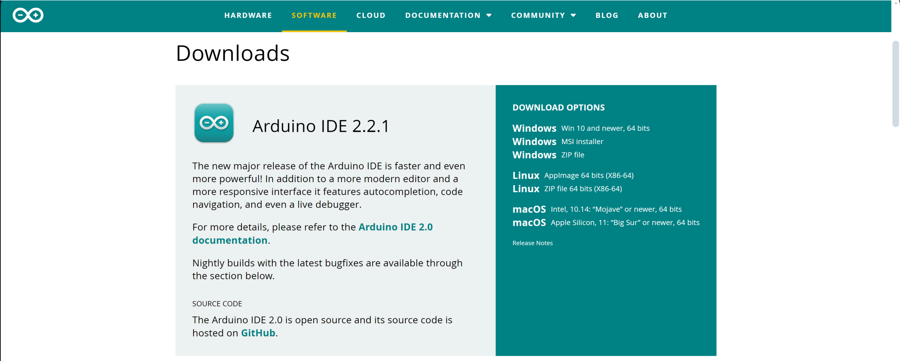
IDE interface (see picture bellow):
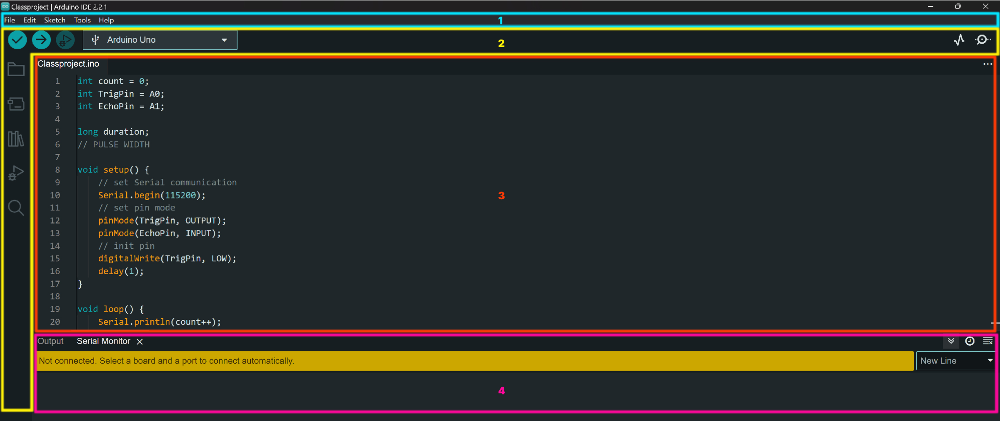
Now you are you are ready to write your code in the Sketch Area of the
Arduino IDE, to control or interact with your connected hardware. The
IDE provides a user-friendly text editor with features like syntax
highlighting and auto-completion to assist you in writing code.
Getting Started with Coding
The Arduino coding language is based on C/C++ and is designed to be
beginner-friendly and easy to understand.
Basic Structure:
The structure consists of two main functions (see picture bellow):
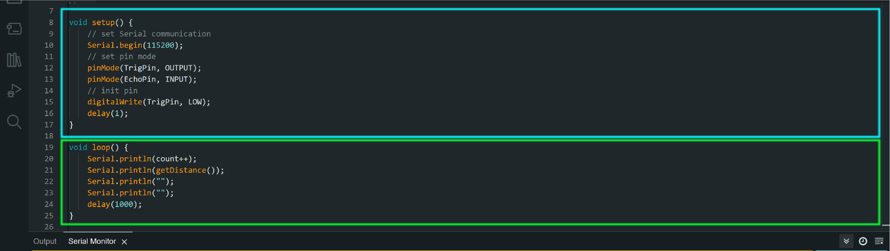
Digital and Analog I/O: Arduino boards have digital and analog
input/output pins that allow you to interact with the physical
world. The Arduino language provides functions to read from and
write to these pins. For example, you can use digitalRead() to read
the state of a digital pin or analogWrite() to output a PWM (Pulse
Width Modulation) signal.
Compile and upload the code
Once you have written your code, click on the "Verify" button
(checkmark icon) in the toolbar to compile your code. This step
ensures that there are no syntax errors in your code. If the
verification is successful, you can proceed to upload the code to your
Arduino board by clicking on the "Upload" button (right arrow icon) in
the toolbar.
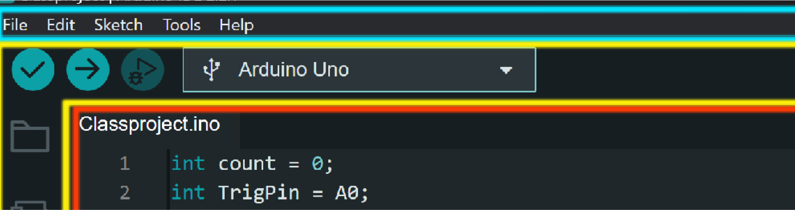